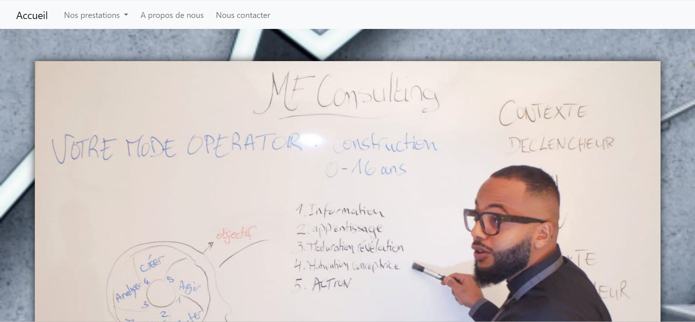
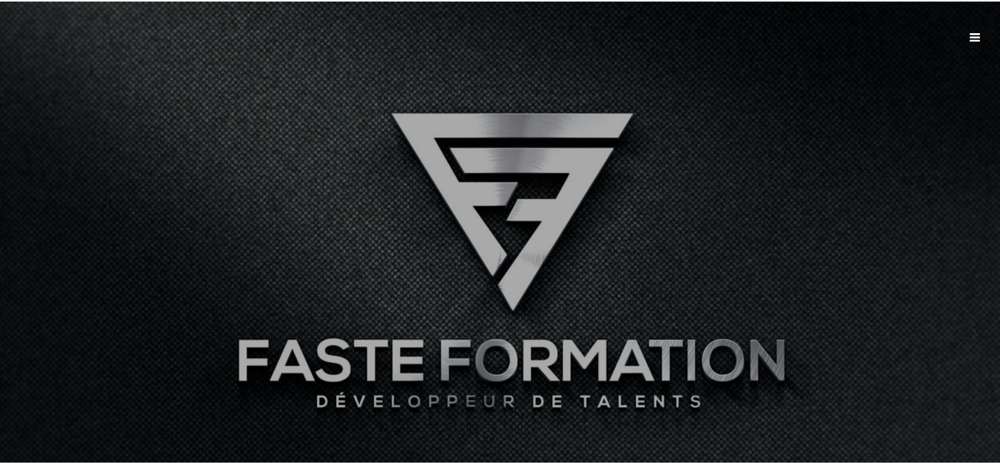

Étudiant à l’ESME, passionné par le développement web et la création de sites modernes et performants. J’aime transformer des idées en expériences numériques simples, esthétiques et efficaces.

Création d’un site vitrine responsive pour un professionnel indépendant, avec design moderne et SEO optimisé.

Développement d’un site vitrine moderne et adaptatif pour une entreprise, intégrant un design soigné, une navigation fluide et un référencement naturel optimisé.
Vous pouvez consulter ou télécharger mon CV en cliquant sur le bouton ci-dessous :
📄 Télécharger mon CV